Welcome to VRX Land… the land of everything VRX!
Beyond these gates, imagination has no speed limit. Towering roller coasters race through the sky, giant Ferris wheels overlook the horizon, world-class VRX racing simulators roar with competition, and every street is filled with unforgettable characters, incredible attractions, delicious restaurants, and nonstop adventure.
Whether you’re chasing checkered flags, exploring magical neighborhoods, meeting the residents, or discovering what outrageous story unfolds next… there’s always something happening in VRX Land.
So buckle up, keep your eyes open, and prepare for a mega mini episode as we introduce you to Team VRX.
HLRN ORIGINAL · SPECIAL
Welcome to VRX Land
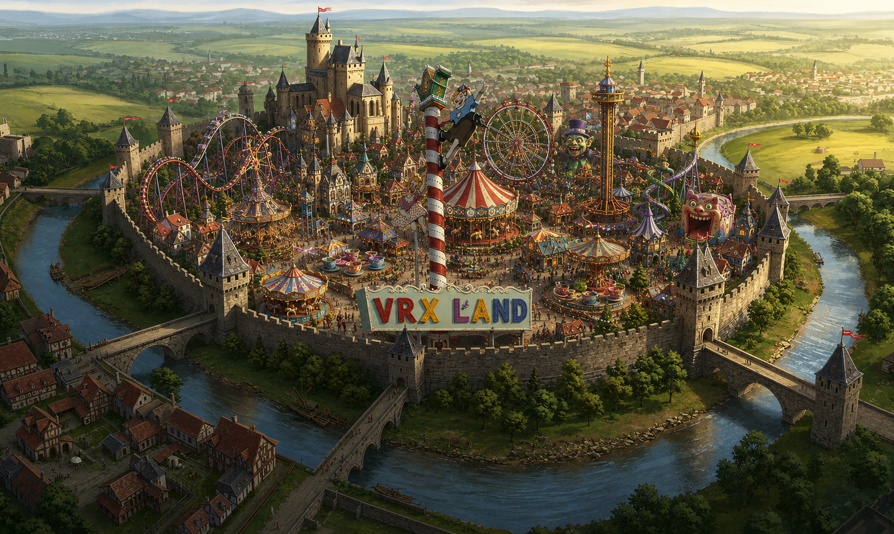
Meet <@841111527016628254> and <@712824704422903919>
From spending sunny afternoons doing yard work, to cooking delicious dinners side by side, enjoying a trip to the local ice cream shop, or ending the day on the couch watching reruns of The Golden Girls*, every moment they share is filled with laughter, love, and happiness.
In a world filled with excitement and adventure, Mama T and Greg remind everyone that sometimes life’s greatest moments are the simple ones shared with the person you love.
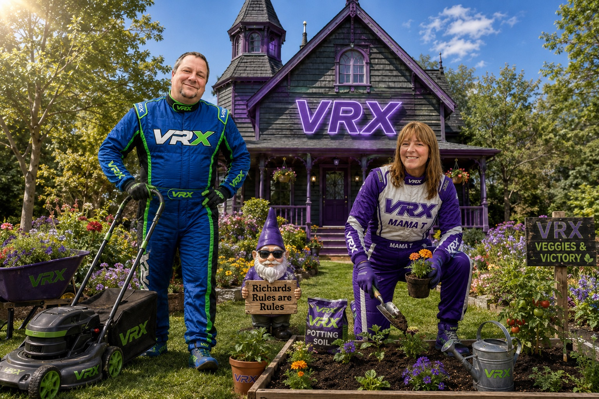
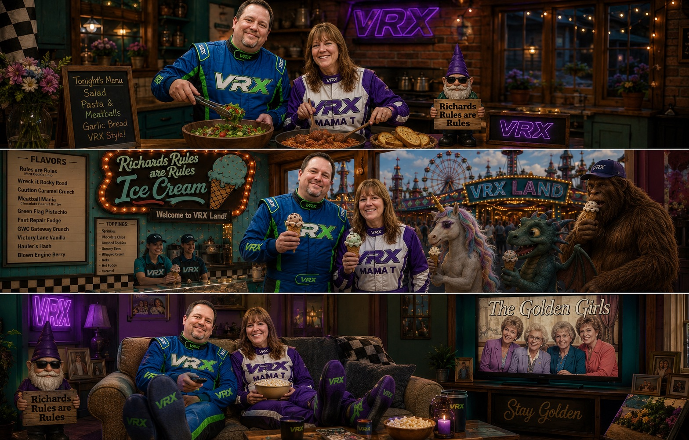
Meet <@486675711286050826> , the wildcard of Team VRX.
No one quite knows what Benjamin will do next, but one thing is certain—he holds the all-time VRX Land record for the most brain freezes ever suffered. Some say he’s still recovering from his last triple-scoop cone.
On the race track, Benjamin is usually a model driver who follows every rule to the letter… that is, until a brain freeze hits. In those rare icy moments, all bets are off, and he’s been known to cause a spectacular (and slightly chaotic) wreck or two before he recovers.
When he’s not racing or recovering from an icy mishap, Benjamin can be found proudly running his famous ice cream shop, serving up scoops, smiles, and the occasional brain freeze to visitors from across VRX Land.
And if you ever walk into a room with Benjamin, don’t be surprised if the conversation somehow turns to his one true obsession: ice cream. After all, it’s not just his favorite dessert—it’s a way of life.
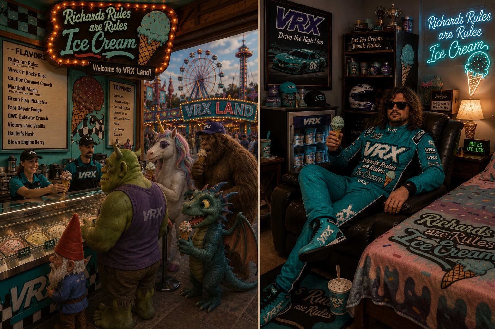
Meet <@829518122540466226> the elected leader of VRX Land and the man who somehow manages to wear more hats than anyone else in town. Governor, land representative, head plumber, business owner—you name it, Brian probably has the title.
His greatest source of pride, however, is his world-famous Duncan’s Meatball Subs. The irresistible aroma of freshly made meatball subs seems to follow Brian everywhere he goes, and truth be told, he wouldn’t have it any other way.
Brian is also the proud owner of the legendary Duncan’s Mansion, a towering landmark that serves as the headquarters for an ever-growing collection of businesses. Inside, visitors can find everything from restaurants and retail stores to plumbing services and professional offices, making it a one-stop destination for just about anything a resident of VRX Land could ever need.
When the workday finally comes to an end, Brian retreats to his bedroom—a shrine to the 1980s. Bon Jovi posters line the walls, classic rock memorabilia fills every corner, and the music is almost always turned up loud. And because no evening would be complete without his favorite meal, a fully stocked meatball sub station is always just a few steps away.
For Brian Duncan, serving the people of VRX Land is a full-time job—but living life with meatball subs, classic rock, and a little organized chaos is simply who he is.
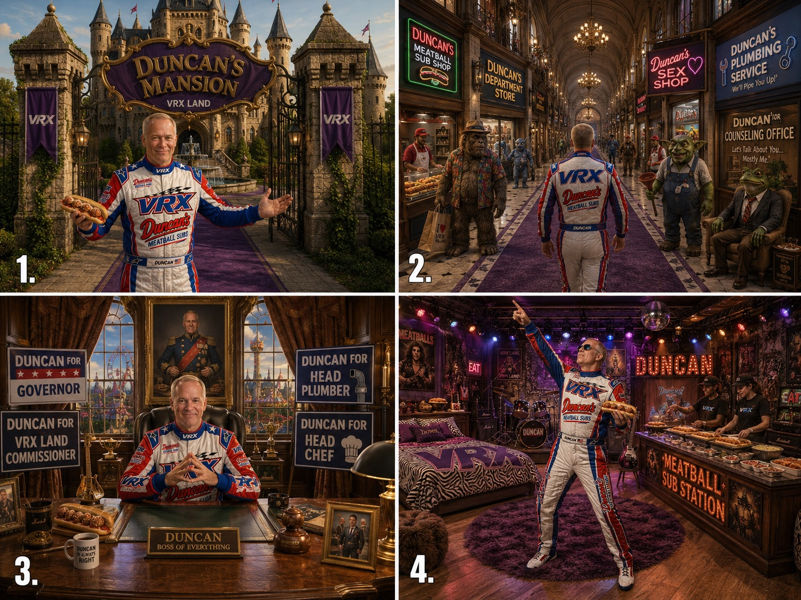
Finally meet <@1015052183332454522> , arguably one of the most talented drivers in all of VRX Land. Whether he’s carving through the field or chasing another victory, Brian always seems to find himself near the front of the pack.
But no matter where Brian goes, one person is never far behind—his trusted hair stylist. Before every race, public appearance, or night on the town, Brian makes sure every strand of hair is perfectly in place. Looking good is just as important as driving fast.
When the racing is over, Brian heads home to his upscale apartment inside Duncan’s Mansion. Known for its lively atmosphere and over-the-top nightlife, Duncan’s Mansion is the perfect place for Brian to unwind after another day at the track.
For Brian Hennings, life in VRX Land is all about speed, style, and living every day like a champion.
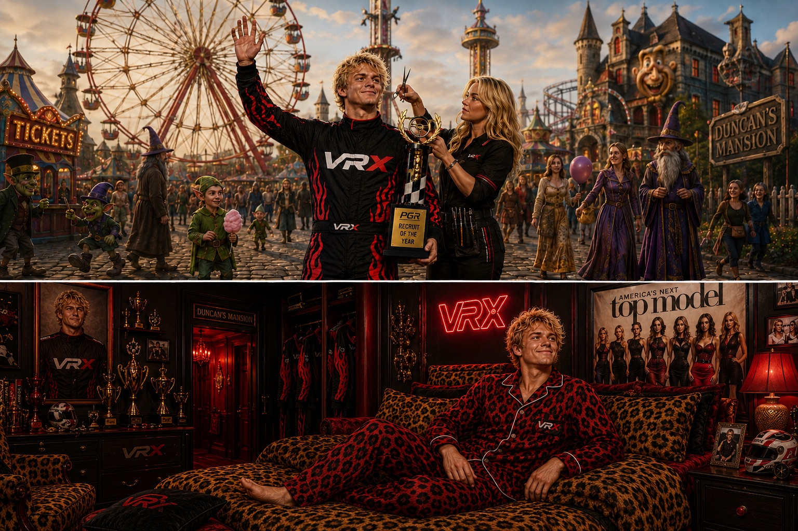
Together, the VRX Crew spends each day welcoming visitors from all over the world and keeping the attractions of VRX Land running at full speed. Whether they’re operating rides, serving delicious food, helping guests, or creating unforgettable memories, every member of the team plays an important role in making VRX Land the happiest place to visit.
Their personalities may be wildly different, but they all share one thing in common—a passion for making every guest’s experience one to remember.
It’s no surprise that wherever you go in VRX Land, you’ll hear the same thing…
Everyone loves the VRX Crew.
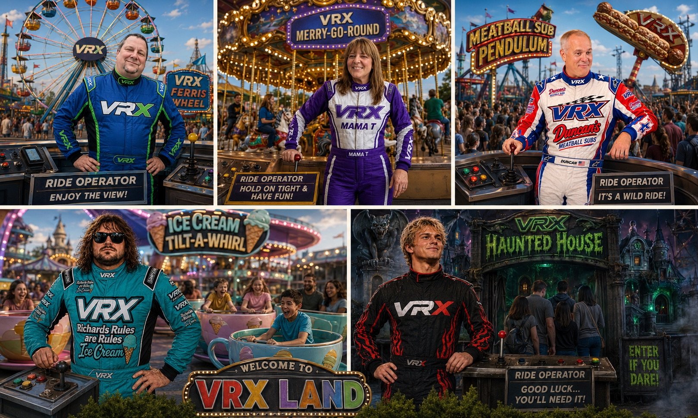
As the sun begins to set over VRX Land, the entire VRX Crew gathers inside their legendary VRX racing simulators. Every evening, they fire up the engines, welcome competitors from around the world, and prepare for another unforgettable night of racing.
To visitors, one question always seems to come up…
Why does the VRX Crew host their races so early?
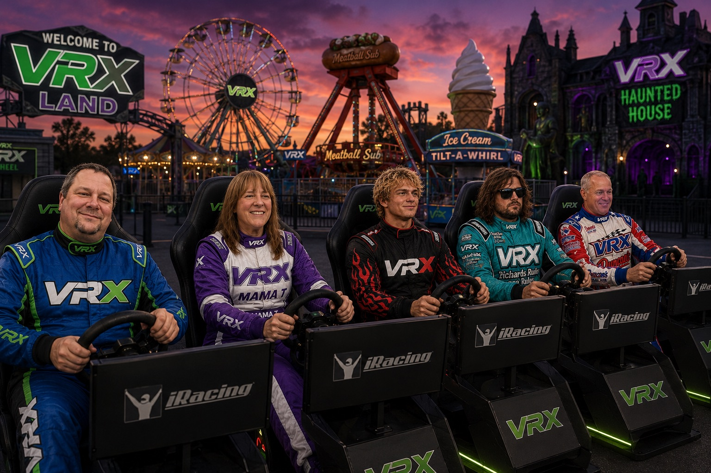
At VRX land, most nights produce a full moon, which is not good for our hero’s at VRX.
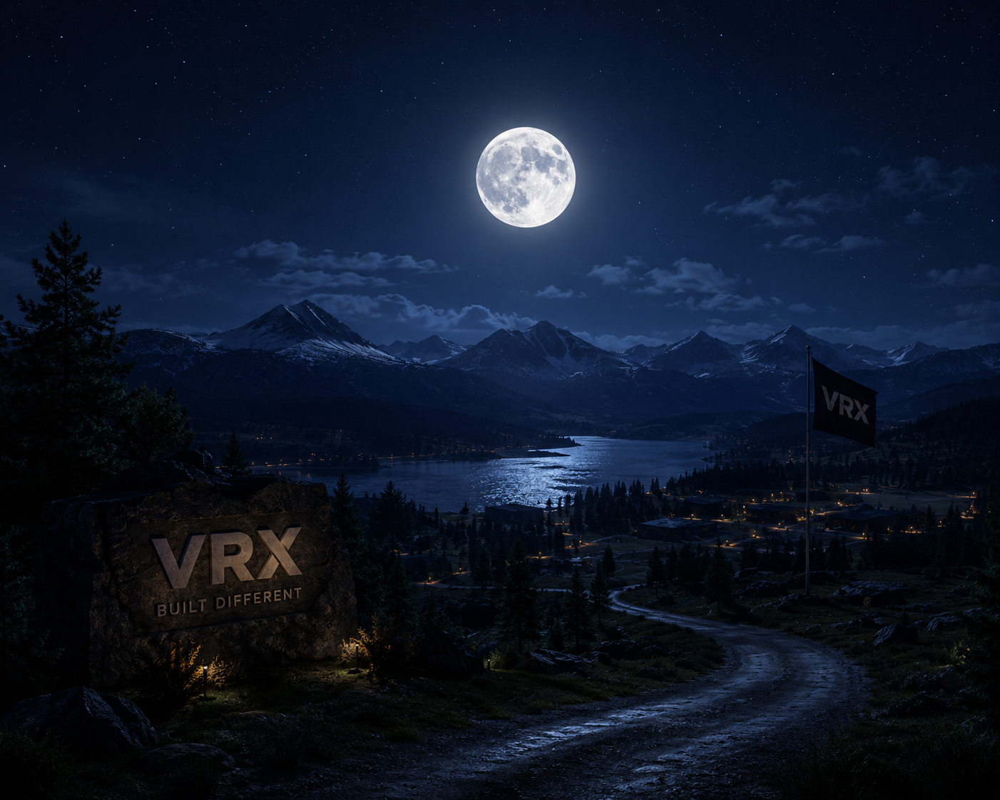
As darkness falls over VRX Land and the full moon rises above the park, something strange begins to happen to the VRX Crew.
<@712824704422903919> and <@841111527016628254> undergo a bizarre transformation, becoming towering Cyclops-like versions of themselves.
Both <@1015052183332454522> and <@829518122540466226> … well… they don’t exactly have the best luck either. Under the moonlight, they transform into terrifying demons, looking nothing like their daytime selves.
And then there’s <@486675711286050826>
Instead of growing horns or a giant eye, it appears that ice cream simply courses through his veins. Every scoop, swirl, and sprinkle somehow becomes part of him.
Good luck with that, bud.
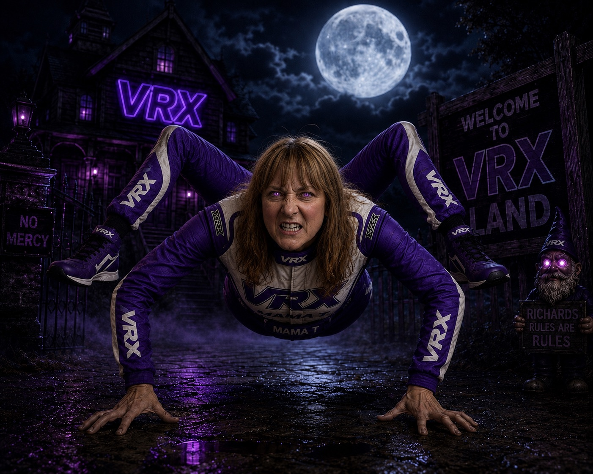
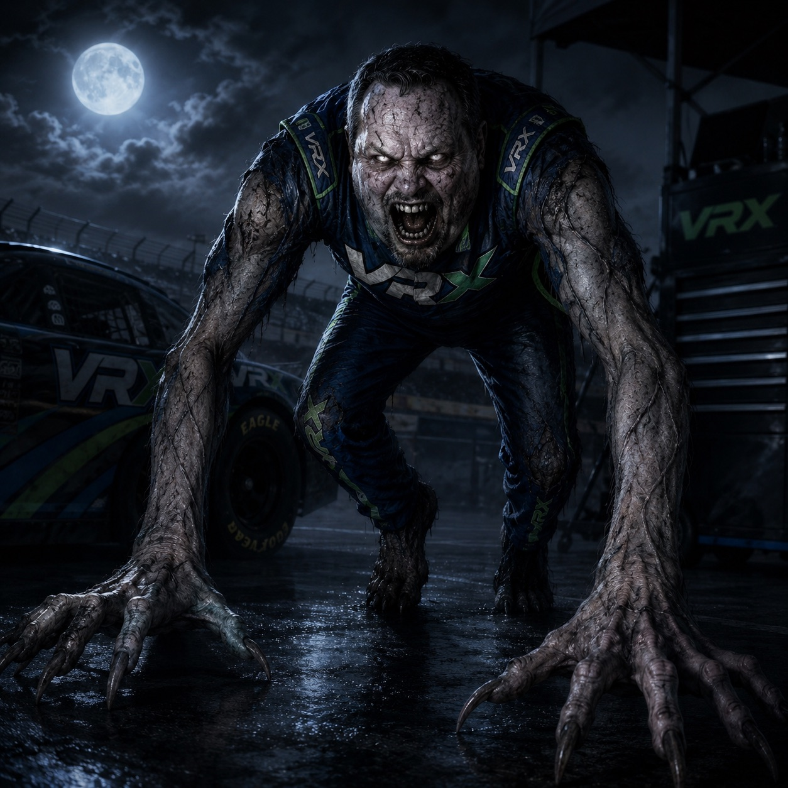
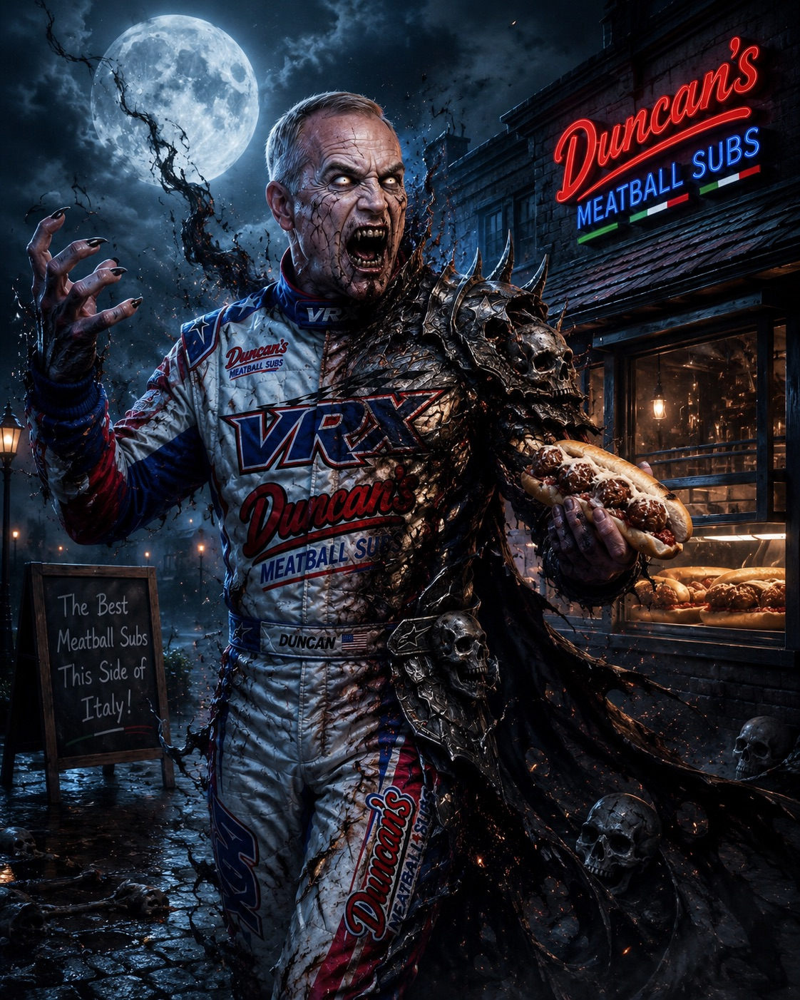
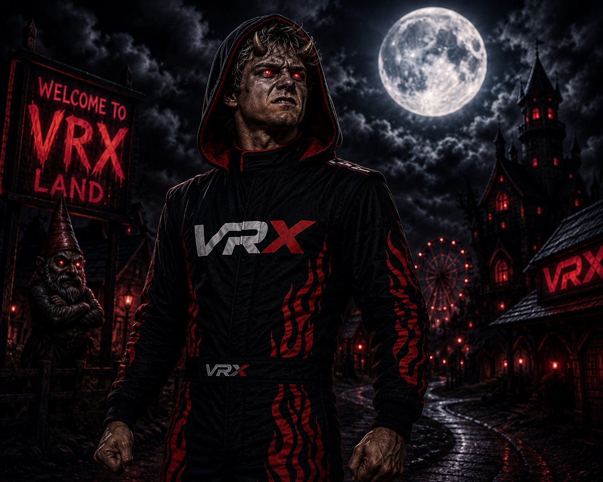
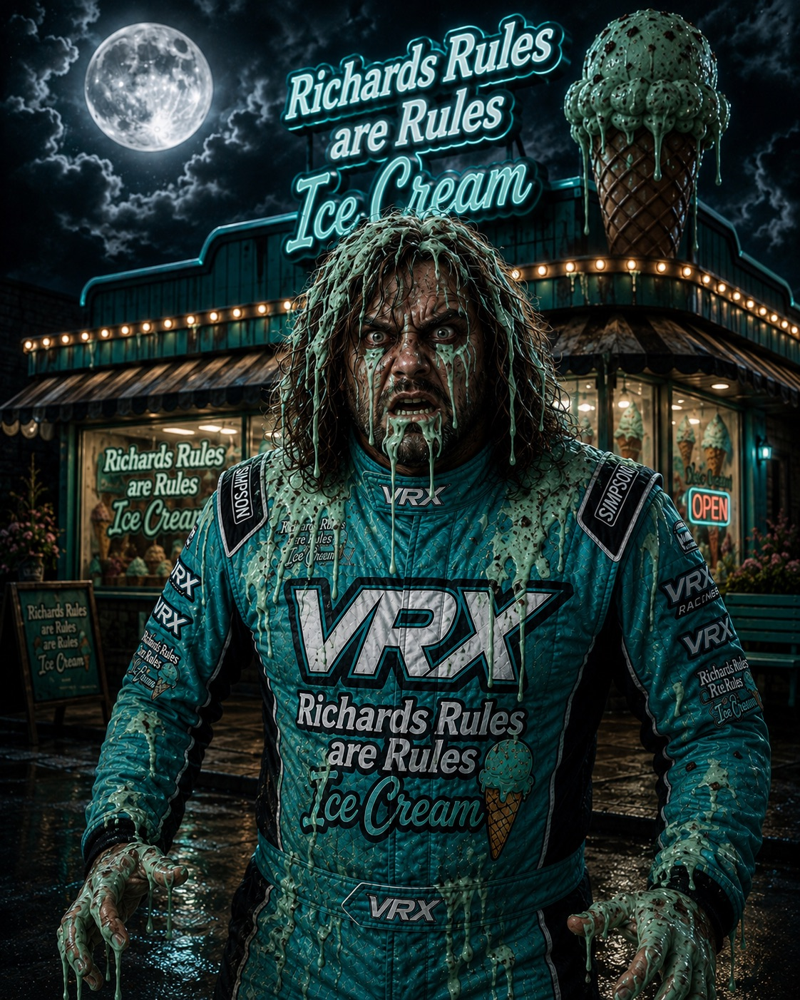
As the transformation reaches its final stage, the once-friendly VRX Crew becomes almost unrecognizable. Their eerie new appearances send loyal customers scrambling for the exit as panic spreads throughout VRX Land.
Within moments, the park is in complete chaos. Frightened guests race toward the front gates, desperate to escape the bizarre sights unfolding before them, while the transformed VRX Crew chases after them through the streets of the park.
By sunrise, everything somehow returns to normal, as if nothing ever happened.
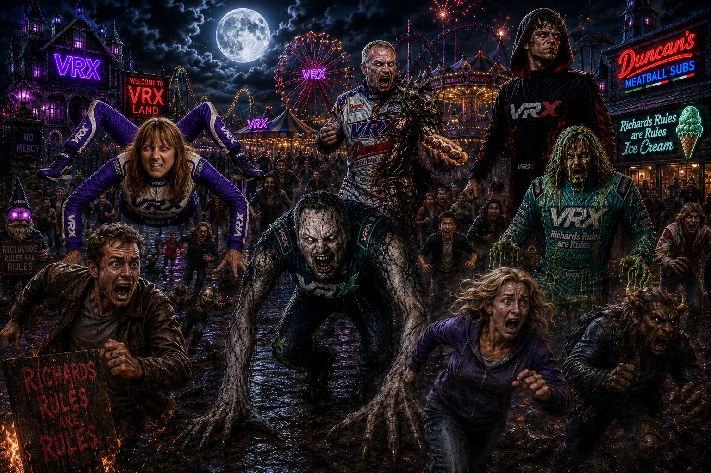
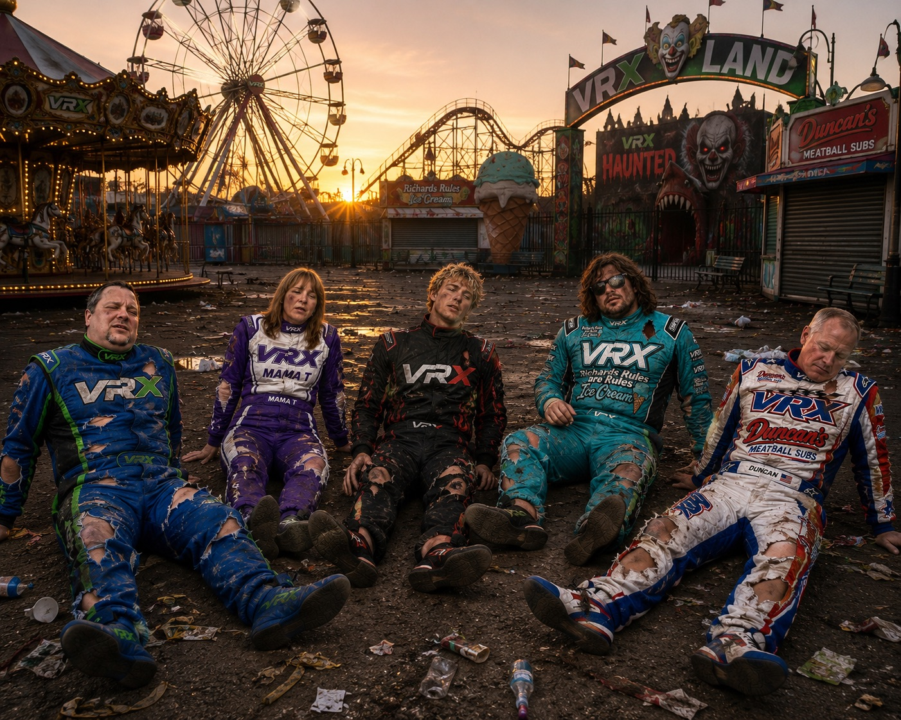
Safe to say… these VRX drivers are an odd bunch lol
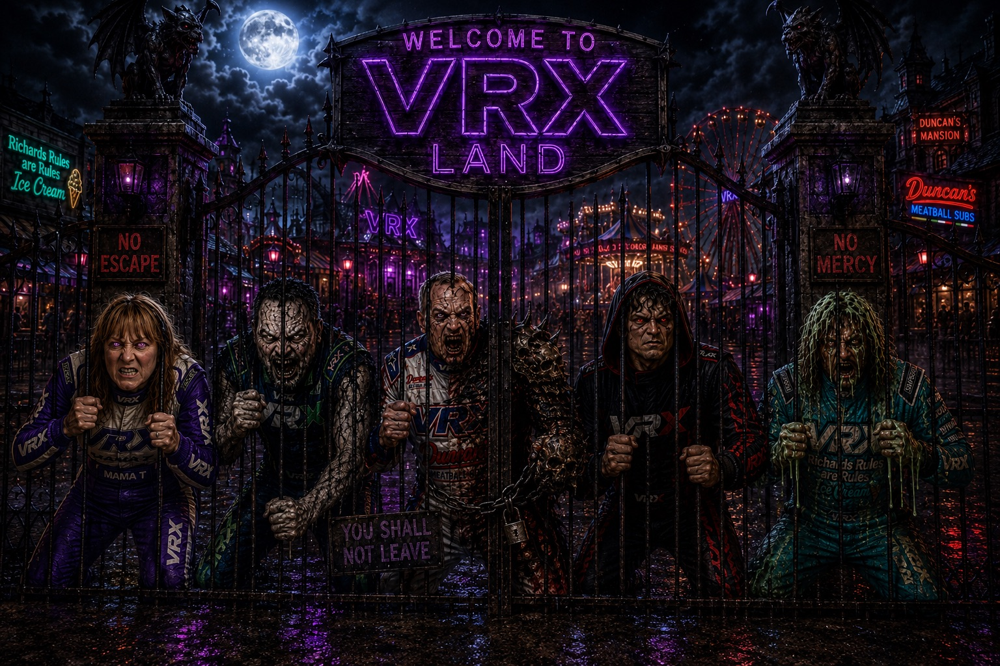